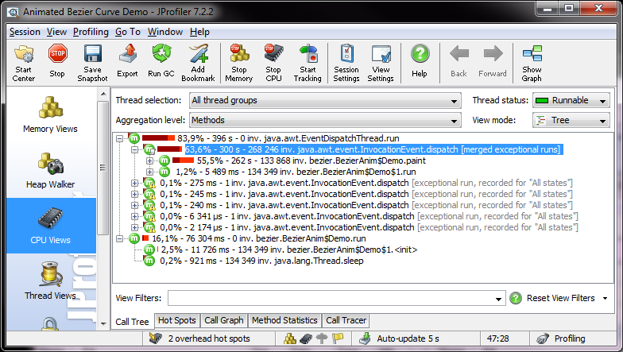
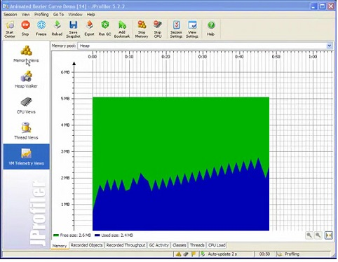
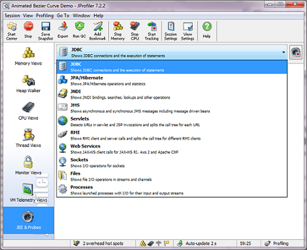
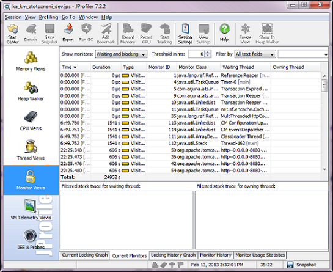
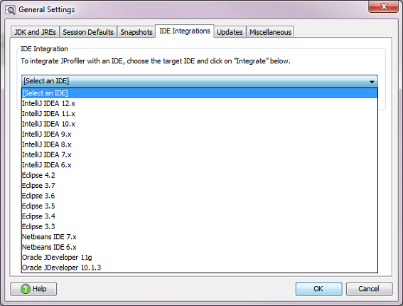

- What is profiling
- What is JProfiler
- Start center & Session Settings
- CPU View
- Memory views & Heap walker & VM Telemetry Views
- JEE & Probes View
- Monitor View
- IDE Integration
- Demo
- Documentation & Screencast
In software engineering, profiling ("program profiling", "software profiling") is a form of dynamic program analysis that measures, for example, the space (memory) or time complexity of a program, the usage of particular instructions, or frequency and duration of function calls. The most common use of profiling information is to aid program optimization.
Profiling is achieved by instrumenting either the program source code or its binary executable form using a tool called a profiler (or code profiler). A number of different techniques may be used by profilers, such as event-based, statistical, instrumented, and simulation methods.
JProfiler's intuitive UI helps you resolve performance bottlenecks, pin down memory leaks and understand threading issues.
Features:
We can see CPU usage per class or methods, number of invocations (in instrumentation mode). Possible views are: Call Tree, Hot Spots, Call Graph, etc.
We can see memory usage, objects on heap, GC activities, etc. Possible views are: Call Tree, Hot Spots, Call Graph, etc.
We can investigate several important technologies (from JEE and JSE), such as JDBC, JPA, JMS, etc.
We can see (and investigate) locking (monitor) on instances.
We can integrate JProfiler to our favorit IDE and start profilling from there.
Let's see some demos...